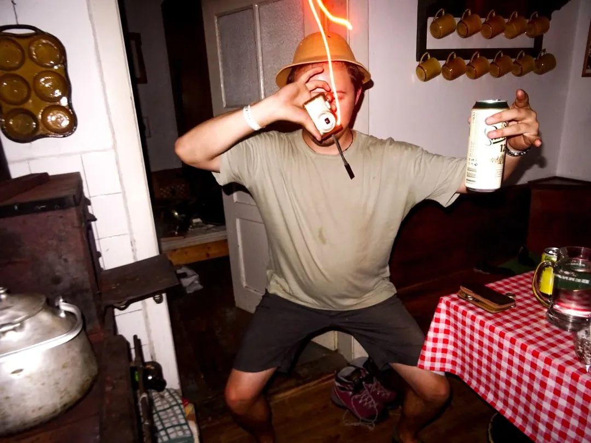

2025

Portfolio 25
bdb
bertik
Počítačový program který zachycuje vzpomínky. Zaměřuje se na schopnost paměti, a co představuje v tom nejzákladnějším.
Bez filtru
Autorský deník zachycující období prozkoumávání modifikací kompaktu. Fotografie jsou doplněné o autorské vstupy.
Blokkada
Autorský variable font, jehož cílem bylo prozkoumat technické a kreativní možnosti proměnlivého písma.
školní práce 3.GD
bdb
1.TXT
Otevřený projekt založený na spontánním sběru scenů pomocí ručního skeneru.
Typotrip
Koncepční návrh vizuální identity pro třídní výstavu.
S3B
Triptych animovaných plakátů, který vizuálně interpretuje tři stavy studentského života.
360
Myšlenku k tomuto projektu se staly práce studentů přípravných kurzů.
2024
Portfolio 25 (Starší)
Archivní práce z roku 2024.